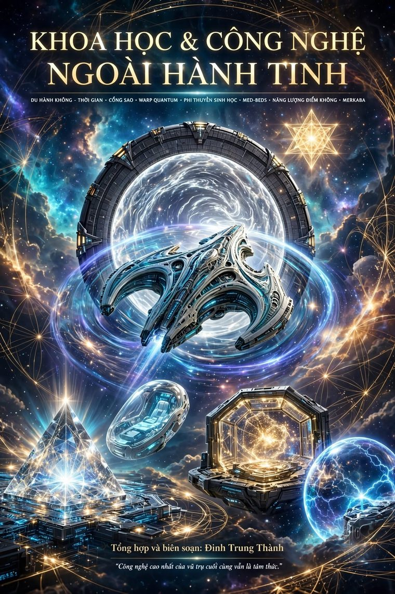

Thư viện chuyên đề miễn phí
Hồ Sơ Thiên Hà
Từ Lăng Kính Lyra và các Đấng Sáng Lập, tới dòng máu Anunnaki, những nền văn minh lòng đất, chương trình không gian bí mật, hòm không gian cổ đại, hồ sơ các chủng tộc — và cuối cùng là cẩm nang tâm thức vũ trụ. 9 chuyên đề, 80 kỳ, đọc theo đúng mạch.
Xem mục lục 80 kỳKhám phá chuyên đề
- 80Kỳ
- 9Chuyên đề
- 134kTừ
- 548Ảnh minh họa
9 chuyên đề
Mỗi chuyên đề là một tuyến truyện liền mạch. Đọc từ kỳ đầu tới kỳ cuối, hoặc nhảy vào bất kỳ chủ đề nào bạn quan tâm.

Tiền Sử Thiên Hà
Khởi nguyên Vũ trụ, Lăng Kính Lyra, các Đấng Sáng Lập và cuộc Đại Di Cư vĩ đại.
10 kỳ →
Hành Trình Thiên Hà
Các nền văn minh thiên hà, Orion, Atlantis — Lemuria và cuộc chiến di truyền.
10 kỳ →
Dòng Máu Anunnaki
Nibiru, Enki — Enlil, di sản 12 chuỗi DNA và ma trận tần số 3D.
10 kỳ →
Văn Minh Lòng Đất
Trái Đất rỗng, Agartha, Telos, Shambhala và mạng lưới căn cứ ngầm.
10 kỳ →
Chương Trình Không Gian Bí Mật
SSP, Solar Warden, ICC, Looking Glass và cuộc giải phóng Hệ Mặt Trời.
10 kỳ →
Hòm Không Gian Cổ Đại
Space Arks dưới đáy đại dương, Nam Cực, Mặt Trăng và Sao Hỏa.
10 kỳ →
Hồ Sơ Các Chủng Tộc
Lyra, Pleiades, Arcturus, Sirius, Draco, Greys và Hoàng gia Anunnaki.
9 kỳ →
Khoa Học & Công Nghệ
Stargates, động cơ warp, med-beds, zero-point energy, vũ khí tần số.
10 kỳ →
Cẩm Nang Tâm Thức Vũ Trụ
Tuyến tùng, luân xa, sóng não, DNA 12 sợi, thể vía và tần số 5D.
1 kỳ →Kỳ mới cập nhật
Ấn phẩm mới nhất trong thư viện — kéo xuống để đọc, không cần đăng ký.
CÔNG NGHỆ DU HÀNH TÂM THỨC, PHÓNG CHIẾU THỂ VÍA & TẦU THỂ PHÁCH (MERKABA)
Bạn đã bao giờ tự hỏi: Đỉnh cao tối thượng của khoa học công nghệ trong Vũ trụ sẽ đi về đâu khi máy móc, kim loại hay các cuộn cảm điện từ không còn là phương tiện di chuyển chính? Điều gì xảy ra khi một sinh mệnh có thể di chuyển xuyên qua các dải thiên hà,…
Đọc → Kỳ 79VŨ KHÍ TẦN SỐ, PLASMA SIÊU CAO TẦN & VŨ KHÍ NĂNG LƯỢNG ĐỊNH HƯỚNG (DEW)
Bạn đã bao giờ tự hỏi: Làm thế nào các trận không chiến trong không gian giữa các phi thuyền ngoài hành tinh lại không hề để lại mảnh vỡ kim loại hỗn loạn hay khói độc mù mịt như các cuộc chiến trên Trái Đất? Tại sao có những luồng sáng chói lọi phát ra từ…
Đọc → Kỳ 78CÔNG NGHỆ NGỦ ĐÔNG TẦN SỐ STASIS & BONG BÓNG THỜI GIAN (TIME DILATION)
Bạn đã bao giờ tự hỏi: Làm thế nào các phi hành đoàn hay các sinh mệnh ngoài hành tinh có thể vượt qua những hành trình vũ trụ kéo dài hàng nghìn năm, hoặc lưu giữ thể xác vật lý của họ suốt hàng thiên niên kỷ bên trong các con tàu cổ đại mà không hề bị lão…
Đọc → Kỳ 77CÔNG NGHỆ THAO TÚNG TẦN SỐ SÓNG NÃO, MA TRẬN 3D & MÁY PHÁT HOLOGRAPHIC
Bạn đã bao giờ tự hỏi: Thực tại mà chúng ta đang quan sát mỗi ngày qua mắt, tai và các giác quan vật lý có thực sự là một thế giới "khách quan duy nhất", hay nó chỉ là một dải tần số tín hiệu được giải mã bởi bộ não? Liệu có tồn tại những công nghệ tiên tiến…
Đọc → Kỳ 76CÔNG NGHỆ TÁI TẠO VẬT CHẤT (REPLICATORS) & IN SINH HỌC LƯỢNG TỬ
Bạn đã bao giờ tự hỏi: Điều gì sẽ xảy ra nếu loài người không còn phải khai thác mỏ khoáng sản, không còn phải chăn nuôi giết mổ động vật, không còn những nhà máy thải khói độc hại ra môi trường, và bất kỳ ai cũng có thể tạo ra một đĩa thức ăn nóng hổi, một…
Đọc → Kỳ 75CÔNG NGHỆ NGỤY TRANG TÀNG HÌNH QUANG HỌC & KHIÊN LÁ CHẮN PLASMA
Bạn đã bao giờ tự hỏi: Làm thế nào một phi thuyền ngoài hành tinh khổng lồ có thể hiện diện ngay trên bầu trời một thành phố lớn mà mắt thường hay các hệ thống radar quân sự hiện đại hoàn toàn không thể phát hiện? Tại sao trong nhiều video quay lại các vật…
Đọc → Kỳ 74NĂNG LƯỢNG ĐIỂM KHÔNG (ZERO-POINT ENERGY) & HỆ THỐNG TINH THỂ QUANG PHỔ
Trong chuỗi hành trình giải mã bí ẩn Vũ trụ và khoa học siêu chiều, một trong những câu hỏi cốt lõi luôn thách thức trí tuệ nhân loại chính là: Làm thế nào mà các nền văn minh tiên tiến trong Đa Vũ trụ có thể vận hành những đại chiến hạm khổng lồ du hành…
Đọc → Kỳ 73BUỒNG Y TẾ TẦN SỐ MED-BEDS & CÔNG NGHỆ TÁI TẠO SINH HỌC
Bạn đã bao giờ tự hỏi: Liệu có một công nghệ y học nào có thể xóa bỏ hoàn toàn mọi bệnh tật hiểm nghèo, tái tạo lại một cánh tay hay nội tạng đã bị cắt bỏ, và đảo ngược tuổi sinh học của cơ thể trở về thời thanh xuân chỉ trong vài giờ đồng hồ mà không cần…
Đọc → Kỳ 72PHI THUYỀN SINH HỌC LƯỢNG TỬ & GIAO DIỆN Ý THỨC (MIND-DNA DRIVE)
Bạn đã bao giờ tự hỏi: Làm thế nào một chiếc phi thuyền ngoài hành tinh có thể đổi hướng vuông góc 90 độ ngay ở tốc độ siêu thanh mà không bị lực quán tính xé rách? Tại sao bên trong phòng điều khiển của các đĩa bay lại hoàn toàn không thấy bảng nút bấm, cần…
Đọc →